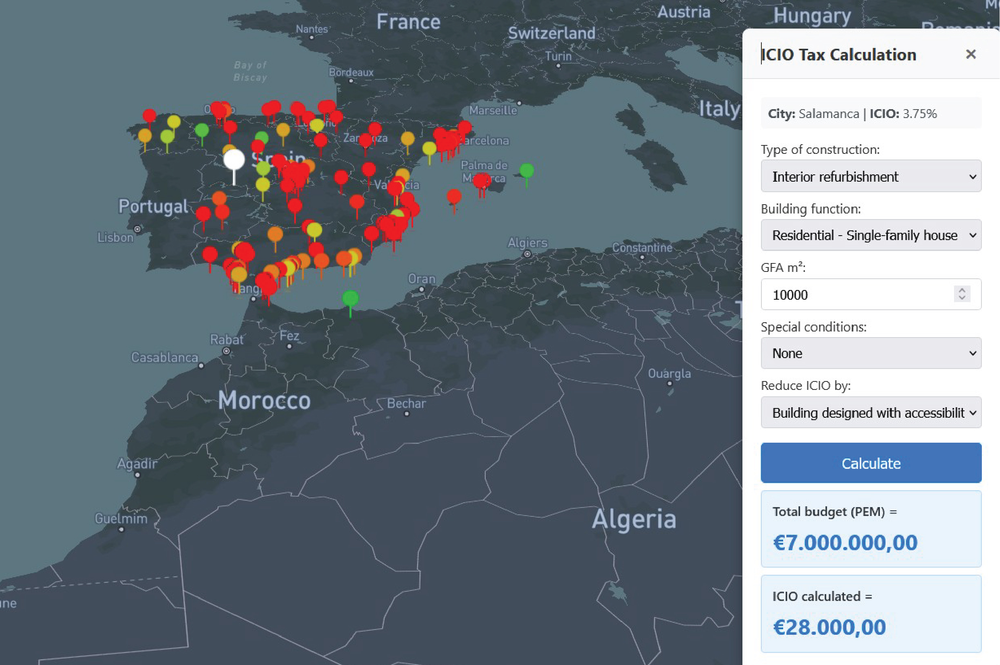

Dimension of Local Policies in Construction is a research initiative focused on the analysis of municipal taxation related to construction, installation, and renovation works in Spain, specifically the Impuesto sobre Construcciones, Instalaciones y Obras (ICIO).
The project examines local ICIO regulations across 145 Spanish cities and includes a dedicated tax calculator that incorporates additional constraints and potential deductions, using Madrid as a reference case.
The research reveals significant regional variation: Melilla applies a 0% ICIO rate, while municipalities in the Basque Country impose some of the highest rates in Spain, reaching up to 5%.
By analyzing the scope of local fiscal policies within the construction sector, the project identifies structural patterns and regional trends that influence construction activity and urban development.

Click the image above to open the application in full screen.